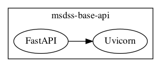

msdss-base-api
Base API for the Modular Spatial Decision Support Systems (MSDSS) framework.
Install
Install Anaconda 3 for Python
Install
msdss_base_apivia pip or through a conda environment
conda create -n msdss_base_api python=3.7
conda activate msdss_base_api
pip install git+https://github.com/rrwen/msdss_base_api
Quick Start
Use in Python:
from msdss_base_api import API
app = API()
How it Works
The base API wraps around FastAPI to define routes and logic, while Uvicorn is used to serve programmed APIs.

Contact
Richard Wen rrwen.dev@gmail.com